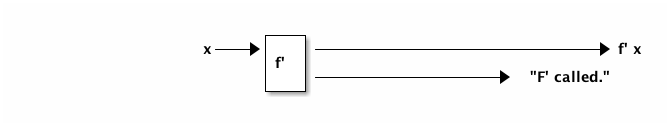
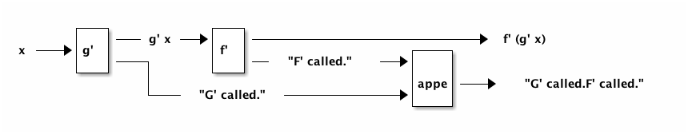

monad structure
example: logging pure functions
extend pure functions with logging
Given f,g :: Float -> Float, keep an ordered log of when they are called.
Extend : f',g' :: Float -> (Float,String)

composing logging
Want to compose
f' . g'
— but inputs/outputs do not match, so adapt:
let (y,s) = g' x (z,t) = f' y in (z,s++t)

generalize (factor out composition)
bind :: (Float -> (Float,String)) -> ((Float,String) -> (Float,String)) bind f' (gx, gs) = let (fx, fs) = f' gx in (fx, gs++fs)
- apply f' to the correct part of g' x
- concatenate string returned by g' with string returned by f'
f' `bind` g' 3.0